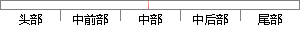

如果当前帧的短时帧能量高于所设定的短时帧高门限或者当前帧的短时平均过零率高于所设定的短时帧平均高过零率。
片段位置图

相似结果|
相似片段 1：当前提出很多端点检测算法[15-18]，论文采用“双门限法”来进行端点检测，它的实现过程如下：⑴检测起点：首先分别为短时平均能量和短时过零率确定两个门限。在静音段，当能量或者过零率的值高于低门限时
相似片段 2：能量过零率双门限端点检测方法把整个信号段分为四段：静音段、过渡段、语音段、结束段，并分别设定低门限值和高门限值。一开始判断时假定为静音段，如果短时平均能量或短时平均过零率超过低门限，就开始标记起始点
相似片段 3：双门限端点检测算法流程图自适应双门限端点检测的具体步骤如下：1)设置初始参数。由语音采集的前10帧信号，确定短时能量和短时过零率的高低门限值。2)检测语音的起始点。如果当前帧的短时能量值高于E或者短时
|
※ 片段修改建议 ※
近似词参考：- 如果：若是 假如 要是
- 或者：或 大概
- 平均：均匀
- 平均：均匀
系统自动生成语句：若是当前帧的短时帧能量高于所设定的短时帧高门限或当前帧的短时均匀过零率高于所设定的短时帧均匀高过零率。
注：本片段修改建议为系统自动生成，仅供参考。